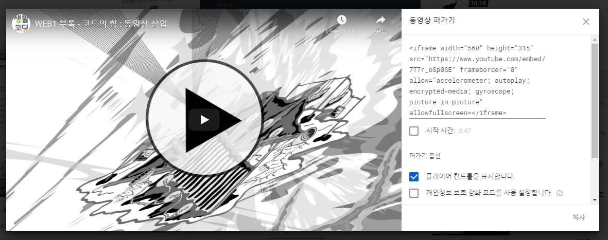

- HTML 배우는 링크
- CSS 배우는 링크
- JavaScript 배우는 링크
- 체박부터 부록까지
200317
WEB1 - 21. 수업을 마치며 2/3
< input type="checkbox" > 체박코드임
WEB1 - 21. 수업을 마치며 3/3
만약 웹사이트를 아름답게 하고싶다면 CSS
사용자와 상호작용하는 웹사이트를 만들고싶다면 자바스크립트
백엔드에는 웹2 JSP, 웹2 PHP, 웹2 Node.js 등등
다 경쟁관계에 있는 기술들이라 뭐그냥 하나 잡아다가 공부하면되고
우리가 지금까지 배운건 웹1
200319
WEB1 부록 - 코드의 힘 : 동영상 삽입
오늘은 웹사이트에 동영상을 추가하는 방법
유튜브에서 공유하기를 누르면 퍼가기가 있는데 그걸 누르면

이런게뜸 잘보면 저거 코드다
고대로 복붙하며는
챠란~ 동영상 추가 성공
WEB1 부록 - 코드의 힘 : 댓글 기능 추가
개인이 만들기는 힘드니까 남이 만들어둔거 낼름하기
https://disqus.com/
200425
오늘은 영상 마저보고 배운것들 정리할것
WEB1 부록 - 코드의 힘 : 채팅 기능 추가
저밑에 바디바로앞에 뭐새로생긴거가 이번에붙인 채팅코드
WEB1 부록 : 코드의 힘 : 웹사이트 방문자 분석기
방문자 분석해주는 코드를 저 맨위 저 헤드태그안에 기따란거 저거
만들긴 햇는데..ㅋㅋ 쪽팔리다 플텍걸고싶다
WEB1 - 엔딩 크래딧
막강~~~
암튼간에.. 뭐.. 수고했다
정리는 새페이지로 만들어야겠다
.
.
.
HTML정리
.....끝!
나는...... 뜬다!